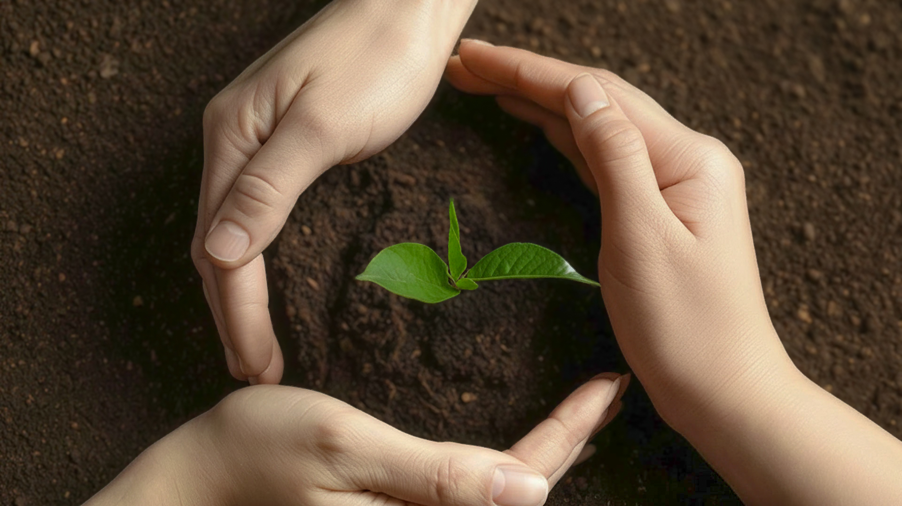

보도자료 · 2025.03.13
풀무원, 국내 식품업계 최초 ‘넷제로 시스템’ 구축
풀무원이 제품의 탄소 배출량을 산정하는 ‘풀무원 넷제로 시스템’을 개발하고, LRQA(로이드인증원)로부터 넷제로 시스템 및 제품탄소발자국 검증의견서를 수여받았습니다.

친환경 케어 Eco-Caring
A Plan for a Better World - Net Zero & Nature Positive
늘어난 먹거리
줄어든 플라스틱 배출
eco-caring은 지구온도 상승을 1.5℃ 이하로 제한하기 위한 풀무원의 실천 계획입니다.
SCROLL DOWN
늘어난 먹거리
줄어든 플라스틱 배출
eco-caring은 지구온도 상승을 1.5℃ 이하로 제한하기 위한 풀무원의 실천 계획입니다.
Net Zero와 Nature Positive를 두 축으로, 사업 전체 범위에서 실현해 나갑니다.
GOAL · DIRECTION · SCOPE
목표
지구온도 상승을 1.5℃ 이하로 제한하기 위해 온실가스 배출량 ‘0’을 목표로 꾸준히 나아갑니다.
목표
지속가능한 지구환경을 위해 생물다양성 손실을 최소화하며 자연 자원을 적극 보전합니다.
전략
지속가능 에너지, 지속가능 수자원, 지속가능 원재료, 지속가능 파트너십을 통해 실천합니다.
PULMUONE ECO-CARING BY NUMBERS
2050
Net Zero 달성 목표 연도
13%
수자원 사용량 감축
20%
플라스틱 사용량 감축
20%
온실가스 감축
I EAT FOR
THE PLANET
더 나은 한 끼를 위한
모두의 식물성 식단
더 편하고, 더 맛있고,
더 즐거운 식탁을 만듭니다
PULMUONE NEWSROOM
PULMUONE NEWSROOM
보도자료 · 2025.03.13
풀무원이 제품의 탄소 배출량을 산정하는 ‘풀무원 넷제로 시스템’을 개발하고, LRQA(로이드인증원)로부터 넷제로 시스템 및 제품탄소발자국 검증의견서를 수여받았습니다.